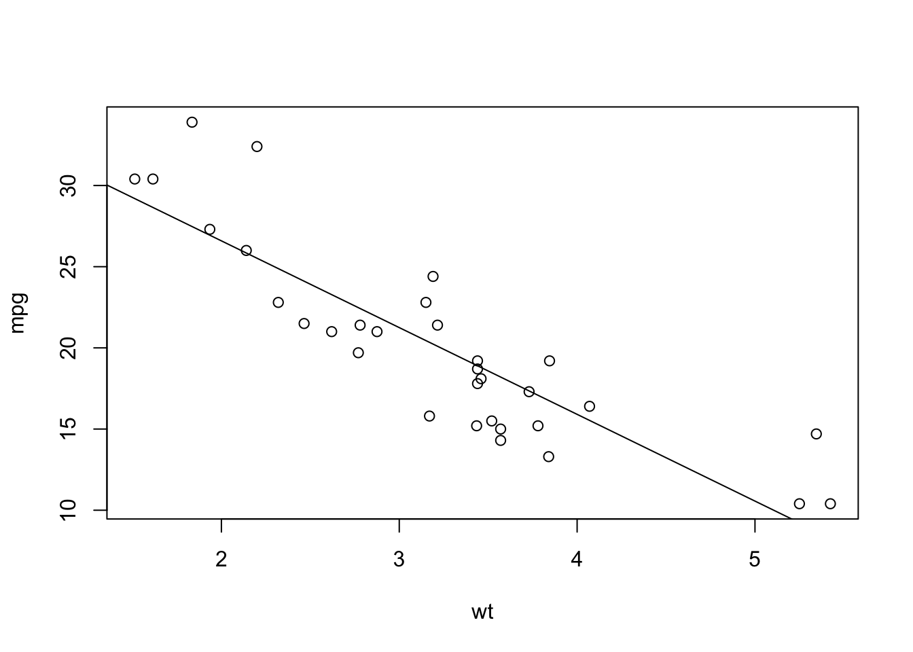

1 Purpose
- Streamline research process (e.g. results of the analysis can be fed directly to the paper)
- Improve reproducibility (all steps are documented with code and explanatory text)
Provide an organizational framework for key elements of the research process and allow for communication, justification, explanation, visualization etc. at all steps:
- Acquisition
- Preparation
- Analysis
- Presentation
- Publication
For example, rather than solely writing: “A linear regression model of fuel efficiency as a function of vehicle weight was determined” (and performing the results by hand, possibly with no way to return to our analysis if we want to change a feature or if we are concerned about an error), we can supplement this description with the code required to execute this procedure as well as the results of running the code:
# Fit a linear model
mod_lm <- lm(mpg ~ wt, data = mtcars)
# Plot results
plot(mpg ~ wt, data = mtcars)
abline(mod_lm)
## The slope is: -5.3 mpg/1000lb